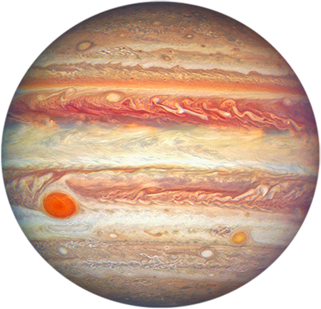

A Collection of Architectural AI Prompts
Back| Prompt | Description |
|---|---|
|
Please guide me through the steps to configure NGINX and GUNICORN for an Ubuntu 24 server that has multiple Django projects with PostgreSQL databases. The PostgreSQL databases are already configured and installed and the Django projects already exist. Each Django project lives in a separate folder in the /var/www/ directory. Each Django project is a sub domain of www.example-site.com where the main site www. is a non Django project with an index.html file. Also, each main site and sub domain will be https but I will get the certs for those on my own. |
Realizing my server needed more complex configuration steps, I needed to request new parameters stating that each sub-domain would be a separate Django project or other framework, that would then need it's own configuration files that I could add to later as I work on each project. |
|
Please guide me through the steps to configure NGINX and GUNICORN for an Ubuntu 24 server that has multiple Django projects with PostgreSQL databases. The PostgreSQL databases are already configured and installed and the Django projects already exist. Each Django project lives in a separate folder in the /var/www/ directory. Each Django project is a sub domain of www.example-site.com where the main site www. is a non Django project with an index.html file. Also, each main site and sub domain will be https but I will get the certs for those on my own. The manage.py file and the wsgi.py file live in the root of the project in /var/www/app1/ directory. |
Attempting to configure an Ubuntu Server to host a Django Project. |
|
Create a docker file for running in docker desktop on windows 3 containers/services for Ubuntu 24.04.3 LTS with Python 3.12.3 and postgresql 16.11 installed and sudo and nano packages installed. Use the bare minimum package dependencies required to build these containers as quickly as possible. Assume this will be a Django project and include command to runserver and expose all necessary ports for running on localhost. When building for the first time install requirements.txt file that lives in the app folder. Make postgres, web and migrations the three separate service containers. On migrations container run makemigrations and migrate commands. Configure postgresql to run on port 5433 and also configure it to easily let me connect pgadmin on windows to my docker containers postgresql database. |
I was having issues connecting to pgAdmin, as I sometimes do even in a work setting. I needed to request instructions to help me quickly resolve these issues. This one also introduces the use of a requirements.txt file. |
|
Create a docker file for running in docker desktop on windows a container(s) for Ubuntu 24.04.3 LTS with Python 3.12.3 and postgresql 16.11 installed and sudo, nano, django and djangorestframework packages installed. Use the bare minimum package dependencies required to build these containers as quickly as possible. Make postgres, web and migrations a separate service. Configure postgresql to run on port 5433 and also configure it to easily let me connect pgadmin on windows to my docker containers postgresql database. |
I had already been using port 5432 on WSL for my current stuff on Windows. Without disrupting my other projects, I needed to build the containers in a way where I could work with an alternative port on Windows. |
|
Create a docker file for running in docker desktop on windows a container(s) for Ubuntu 24.04.3 LTS with Python 3.12.3 and postgresql 16.11 installed and sudo, nano, django and djangorestframework packages installed. Use the bare minimum package dependencies required to build these containers as quickly as possible. Make postgres, web and migrations a separate service. |
Realizing that everything was jammed into one single container. In a practical real-world scenario, I would need to break down components into separate services that could then be siphoned off into AWS services or whatnot. |
|
Create a docker file for running in docker desktop on windows a container(s) for Ubuntu 24.04.3 LTS with Python 3.12.3 and postgresql 16.11 installed. Use the bare minimum package dependencies required to build these containers as quickly as possible. |
Realizing that the first execution stuffed a lot of garbage into the container that made building for the first time take a tremendously long time and would not be practical for a large team of developers. I needed it to trim the fat. |
|
Create a docker file for running in docker desktop on windows a container(s) for Ubuntu 24.04.3 LTS with Python 3.12.3 and postgresql 16.11 installed. |
First attempt to generate a Docker configuration script for a Django project. |